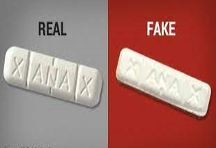
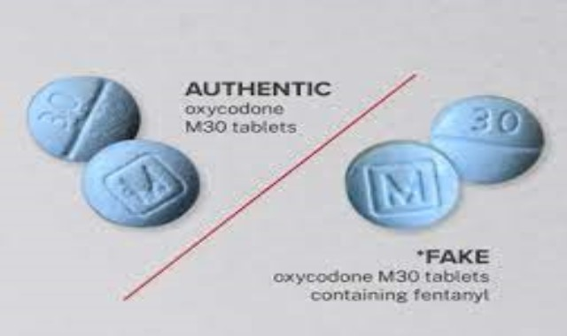
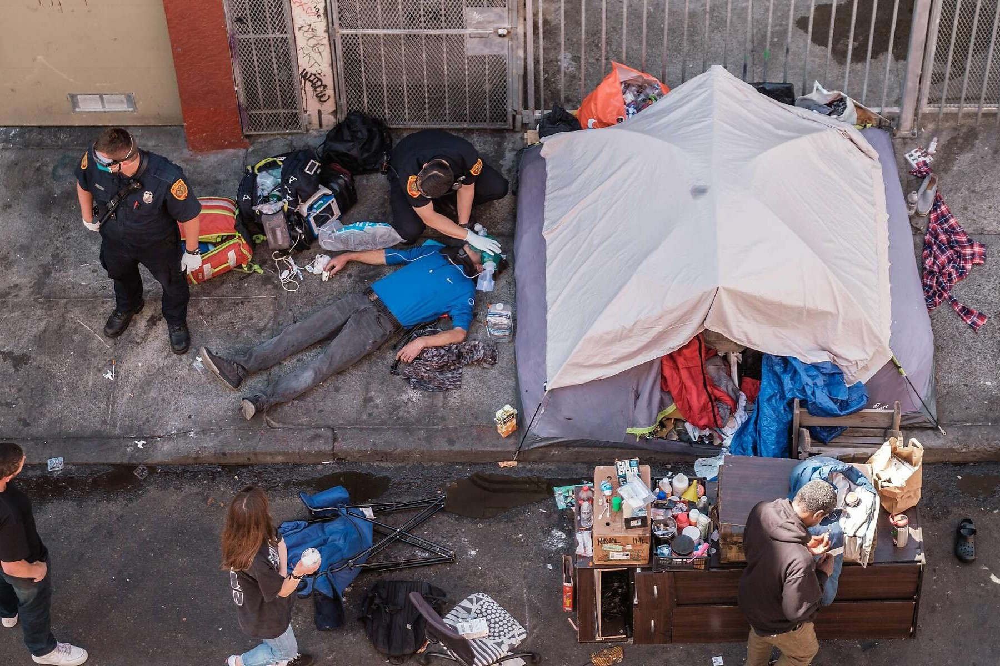
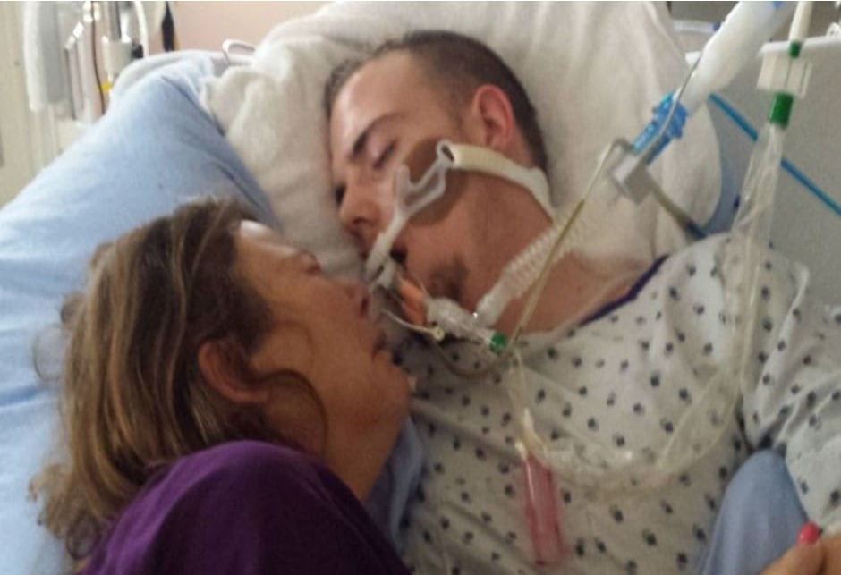
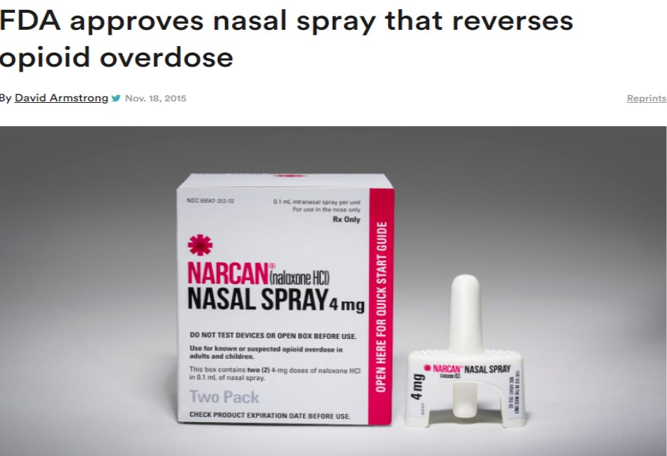

Fentanyl Overdose Epidemic Amid Pandemic
The Fentanyl Crisis America's New Epidemic

Facts: Fentanyl: An Epidemic made worse bt the COVID 19 Pandemic

FAKE PRESCRIPTION DRUGS LACED WITH FENTANYL
We need to make awareness to the emerging Endemic Amid the Pandemic
The isolation and stigma brought by Pandemic leads to opiod dependency as a way of coping mechanism

We need to create a safer approach to detoxing to save lives instead of death

NALOXONE OR NARCAN IS A LIFE SAVING DRUG

There is a push to make Naloxone more accessible
Fentanyl is a powerful synthetic opioid that is similar to morphine but is 50 to 100 times more potent.1,2 It is a prescription drug that is also made and used illegally. Like morphine, it is a medicine that is typically used to treat patients with severe pain, especially after surgery.3 It is also sometimes used to treat patients with chronic pain who are physically tolerant to other opioids.4 Tolerance occurs when you need a higher and/or more frequent amount of a drug to get the desired effects. In its prescription form, fentanyl is known by such names as Actiq®, Duragesic®, and Sublimaze®.4,5 Synthetic opioids, including fentanyl, are now the most common drugs involved in drug overdose deaths in the United States. In 2017, 59.8 percent of opioid-related deaths involved fentanyl compared to 14.3 percent in 2010.
The United States Drug Enforcement Administration issued a warning after numerous mass-overdoses across the country that involved fentanyl.
The agency said fentanyl is driving the nationwide overdose epidemic and officials seeing similar trends.
February of this year the federal Commission on Combating Synthetic Opioid Trafficking labeled fentanyl a “slow-motion weapon of mass destruction.”
Today we learned that more than 100,000 Americans died of drug overdoses in the last year. That is the highest overdose death toll ever recorded in a 12-month period.
The US Centers for Disease Control and Prevention said 100,300 Americans died of overdoses between May 2020 and April 2021. That's a 28 percent increase on the previous year. Most of the death came from overdoses of the synthetic drug Fentanyl. An epidemic of addiction made worse by the COVID-19 pandemic. Lockdowns left drug users socially isolated and unable to get treatment. Drug overdoses now claim more lives than car accidents and gun violence combined.
So, what are we likely to see if someone we know is overdosing on opioids? If you have a friend who is a frequent user, it’s easy to just think that they’re high. But on closer examination, there are some signs that are unmistakable:
The victim may be unconscious and unresponsive. Meaning you may not be able to shake them awake.
If they are awake, they may be unable to speak.
The victim’s face will likely be clammy. Their skin may turn an unnatural colour.
You may hear gurgling or choking sounds.
If the victim’s lips and fingernails are bluish or purple, this is definitely an overdose.
Their pulse will be very slow, or erratic, varying speeds.
Their breathing will be similarly slow or erratic.
If they can speak, it will be difficult to make out what they’re saying.
Ultimately, it’s very possible that the victim’s breathing and/or heart could stop, and then thesituation becomes much more urgent. It’s very important to get help before that happens, as soon as possible after you observe that an overdose may be happening.
USING NALOXONE AGAINST OPIOID USE
Matthew A. Torrington, MD: That brings us to naloxone, which is an opioid antagonist. It has been widely used to counteract the effects of an opioid overdose. My story with naloxone starts in the mid-2000s, when I was writing prescriptions for that were illegal because I never saw the patients as part of the needle exchange. I was like, “Everybody needs to have naloxone around.” What we found when we studied patients who got naloxone was that they stopped injecting salt or water, or putting people in cold baths or running, or doing all the other crazy things that they used to do. [It’s because when] somebody had an overdose, nobody wanted to call 911.
Increased access to Narcan, easier testing for fentanyl raised as ways to stop opioid deaths
BARS ARE HELPING PREVENT DRUG OVERDOSES WITH FREE FENTANYL TEST STRIPS
A few weeks ago, I went into the bathroom of All Night Skate, a retro, roller-rink party themed bar in Brooklyn and was pleasantly surprised to see a small plastic container that I hadn’t seen there before. A note adorned it, advertising free fentanyl test strips for anyone to grab. “Take only as many as you need,” the sign read.
CDC Launches New Education Campaigns Aimed at Preventing Drug Overdose Deaths
{kind=link}
{kind=link}
{kind=link}
{kind=link}
{kind=link}
{kind=link}
{kind=link}
{kind=link}